(zu § 41 Absatz 1)
Vorschriftzeichen
| 1 | 2 | 3 | ||||||||||||||||||||||||||
| lfd. Nr. | Zeichen und Zusatzzeichen | Ge- oder Verbote Erläuterungen | ||||||||||||||||||||||||||
| A b s c h n i t t 1 W a r t e g e b o t e u n d H a l t g e b o t e | ||||||||||||||||||||||||||||
| 1 | Zeichen 201 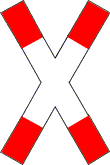 Andreaskreuz |
Ge- oder Verbot
Erläuterung Das Zeichen (auch liegend) befindet sich vor dem Bahnübergang, in der Regel unmittelbar davor. Ein Blitzpfeil in der Mitte des Andreaskreuzes zeigt an, dass die Bahnstrecke eine Spannung führende Fahrleitung hat. | ||||||||||||||||||||||||||
| 2 | Zeichen 205 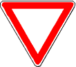 Vorfahrt gewähren. |
Ge- oder Verbot
Erläuterung Das Zeichen steht unmittelbar vor der Kreuzung oder Einmündung. Es kann durch dasselbe Zeichen mit Zusatzzeichen, das die Entfernung angibt, angekündigt sein. | ||||||||||||||||||||||||||
| 2.1 | 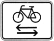 |
Ge- oder Verbot Ist das Zusatzzeichen zusammen mit dem Zeichen 205 angeordnet, bedeutet es: Wer ein Fahrzeug führt, muss Vorfahrt gewähren und dabei auf Radverkehr von links und rechts achten. Erläuterung Das Zusatzzeichen steht über dem Zeichen 205. | ||||||||||||||||||||||||||
| 2.2 | 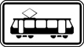 |
Ge- oder Verbot Ist das Zusatzzeichen zusammen mit dem Zeichen 205 angeordnet, bedeutet es: Wer ein Fahrzeug führt, muss der Straßenbahn Vorfahrt gewähren. Erläuterung Das Zusatzzeichen steht über dem Zeichen 205. | ||||||||||||||||||||||||||
| 3 | Zeichen 206 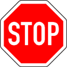 Halt. Vorfahrt gewähren. |
Ge- oder Verbot
| ||||||||||||||||||||||||||
| 3.1 | 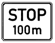 |
Erläuterung Das Zusatzzeichen kündigt zusammen mit dem Zeichen 205 das Haltgebot in der angegebenen Entfernung an. | ||||||||||||||||||||||||||
| 3.2 |
Ge- oder Verbot Ist das Zusatzzeichen zusammen mit dem Zeichen 206 angeordnet, bedeutet es: Wer ein Fahrzeug führt, muss anhalten und Vorfahrt gewähren und dabei auf Radverkehr von links und rechts achten. Erläuterung Das Zusatzzeichen steht über dem Zeichen 206. | |||||||||||||||||||||||||||
| zu 2 und 3 | 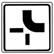 |
Erläuterung Das Zusatzzeichen gibt zusammen mit den Zeichen 205 oder 206 den Verlauf der Vorfahrtstraße (abknickende Vorfahrt) bekannt. | ||||||||||||||||||||||||||
| 4 | Zeichen 208 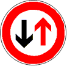 Vorrang des Gegenverkehrs |
Ge- oder Verbot Wer ein Fahrzeug führt, hat dem Gegenverkehr Vorrang zu gewähren. | ||||||||||||||||||||||||||
| A b s c h n i t t 2 V o r g e s c h r i e b e n e F a h r t r i c h t u n g e n | ||||||||||||||||||||||||||||
| zu 5 bis 7 |
Ge- oder Verbot Wer ein Fahrzeug führt, muss der vorgeschriebenen Fahrtrichtung folgen. Erläuterung Andere als die dargestellten Fahrtrichtungen werden entsprechend vorgeschrieben. Auf Anlage 2 laufende Nummer 70 wird hingewiesen. | |||||||||||||||||||||||||||
| 5 | Zeichen 209 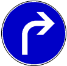 Rechts | |||||||||||||||||||||||||||
| 6 | Zeichen 211 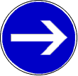 Hier rechts | |||||||||||||||||||||||||||
| 7 | Zeichen 214 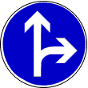 Geradeaus oder rechts | |||||||||||||||||||||||||||
| 8 | Zeichen 215 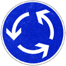 Kreisverkehr |
Ge- oder Verbot
| ||||||||||||||||||||||||||
| 9 | Zeichen 220 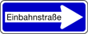 Einbahnstraße |
Ge- oder Verbot Wer ein Fahrzeug führt, darf die Einbahnstraße nur in Richtung des Pfeils befahren. Erläuterung Das Zeichen schreibt für den Fahrzeugverkehr auf der Fahrbahn die Fahrtrichtung vor. | ||||||||||||||||||||||||||
| 9.1 |
Ge- oder Verbot Ist Zeichen 220 mit diesem Zusatzzeichen angeordnet, bedeutet dies: Wer ein Fahrzeug führt, muss beim Einbiegen und im Verlauf einer Einbahnstraße auf Radverkehr entgegen der Fahrtrichtung achten. Erläuterung Das Zusatzzeichen zeigt an, dass Radverkehr in der Gegenrichtung zugelassen ist. Beim Vorbeifahren an einer für den gegenläufigen Radverkehr freigegebenen Einbahnstraße bleibt gegenüber dem ausfahrenden Radfahrer der Grundsatz, dass Vorfahrt hat, wer von rechts kommt (§ 8 Absatz 1 Satz 1) unberührt. Dies gilt auch für den ausfahrenden Radverkehr. Mündet eine Einbahnstraße für den gegenläufig zugelassenen Radverkehr in eine Vorfahrtstraße, steht für den aus der Einbahnstraße ausfahrenden Radverkehr das Zeichen 205. | |||||||||||||||||||||||||||
| A b s c h n i t t 3 V o r g e s c h r i e b e n e V o r b e i f a h r t | ||||||||||||||||||||||||||||
| 10 | Zeichen 222 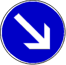 Rechts vorbei |
Ge- oder Verbot Wer ein Fahrzeug führt, muss der vorgeschriebenen Vorbeifahrt folgen. Erläuterung "Links vorbei" wird entsprechend vorgeschrieben. | ||||||||||||||||||||||||||
| ||||||||||||||||||||||||||||
| zu 11 bis 13 |
Erläuterung Wird das Zeichen 223.1, 223.2 oder 223.3 für eine Fahrbahn mit mehr als zwei Fahrstreifen angeordnet, zeigen die Zeichen die entsprechende Anzahl der Pfeile. | |||||||||||||||||||||||||||
| 11 | Zeichen 223.1 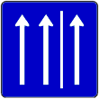 Seitenstreifen befahren |
Ge- oder Verbot Das Zeichen gibt den Seitenstreifen als Fahrstreifen frei; dieser ist wie ein rechter Fahrstreifen zu befahren. | ||||||||||||||||||||||||||
| 11.1 | 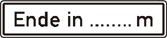 |
Erläuterung Das Zeichen 223.1 mit dem Zusatzzeichen kündigt die Aufhebung der Anordnung an. | ||||||||||||||||||||||||||
| 12 | Zeichen 223.2 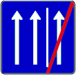 Seitenstreifen nicht mehr befahren |
Ge- oder Verbot Das Zeichen hebt die Freigabe des Seitenstreifens als Fahrstreifen auf. | ||||||||||||||||||||||||||
| 13 | Zeichen 223.3 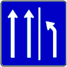 Seitenstreifen räumen |
Ge- oder Verbot Das Zeichen ordnet die Räumung des Seitenstreifens an. | ||||||||||||||||||||||||||
| 14 | Zeichen 224 Haltestelle |
Ge- oder Verbot Wer ein Fahrzeug führt, darf bis zu 15 m vor und hinter dem Zeichen nicht parken. Erläuterung Das Zeichen kennzeichnet eine Haltestelle des Linienverkehrs und für Schulbusse. Das Zeichen mit dem Zusatzzeichen "Schulbus" (Angabe der tageszeitlichen Benutzung) auf einer gemeinsamen weißen Trägerfläche kennzeichnet eine Haltestelle nur für Schulbusse. | ||||||||||||||||||||||||||
| 15 | Zeichen 229 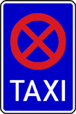 Taxenstand |
Ge- oder Verbot Wer ein Fahrzeug führt, darf an Taxenständen nicht halten, ausgenommen sind für die Fahrgastbeförderung bereitgehaltene Taxen. Erläuterung Die Länge des Taxenstandes wird durch die Angabe der Zahl der vorgesehenen Taxen oder das am Anfang der Strecke aufgestellte Zeichen mit einem zur Fahrbahn weisenden waagerechten weißen Pfeil und durch ein am Ende aufgestelltes Zeichen mit einem solchen von der Fahrbahn wegweisenden Pfeil oder durch eine Grenzmarkierung für Halt- und Parkverbote (Zeichen 299) gekennzeichnet. | ||||||||||||||||||||||||||
| 15.1 | Zeichen 230 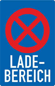 Ladebereich |
Ge- oder Verbot
Erläuterung Die Länge des Ladebereichs wird durch das am Anfang der Strecke aufgestellte Zeichen mit einem zur Fahrbahn weisenden waagerechten weißen Pfeil und durch ein am Ende aufgestelltes Zeichen mit einem solchen von der Fahrbahn wegweisenden Pfeil oder durch Markierung gekennzeichnet. | ||||||||||||||||||||||||||
| A b s c h n i t t 5 S o n d e r w e g e | ||||||||||||||||||||||||||||
| 16 | Zeichen 237 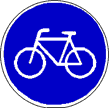 Radweg |
Ge- oder Verbot
| ||||||||||||||||||||||||||
| 17 | Zeichen 238 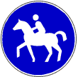 Reitweg |
Ge- oder Verbot
| ||||||||||||||||||||||||||
| 18 | Zeichen 239 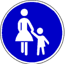 Gehweg |
Ge- oder Verbot
Erläuterung Das Zeichen kennzeichnet einen Gehweg (§ 25 Absatz 1 Satz 1), wo eine Klarstellung notwendig ist. | ||||||||||||||||||||||||||
| 19 | Zeichen 240 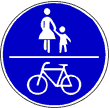 Gemeinsamer Geh- und Radweg |
Ge- oder Verbot
Erläuterung Das Zeichen kennzeichnet auch den Gehweg (§ 25 Absatz 1 Satz 1). | ||||||||||||||||||||||||||
| 20 | Zeichen 241 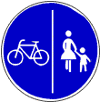 Getrennter Rad- und Gehweg |
Ge- oder Verbot
Erläuterung Das Zeichen kennzeichnet auch den Gehweg (§ 25 Absatz 1 Satz 1). | ||||||||||||||||||||||||||
| 21 | Zeichen 242.1 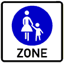 Beginn einer Fußgängerzone |
Ge- oder Verbot
| ||||||||||||||||||||||||||
| 22 | Zeichen 242.2 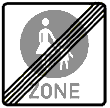 Ende einer Fußgängerzone | |||||||||||||||||||||||||||
| 23 | Zeichen 244.1 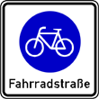 Beginn einer Fahrradstraße |
Ge- oder Verbot
| ||||||||||||||||||||||||||
| 24 | Zeichen 244.2 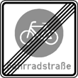 Ende einer Fahrradstraße | |||||||||||||||||||||||||||
| 24.1 | Zeichen 244.3 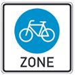 Beginn einer Fahrradzone | Ge- oder Verbot
| ||||||||||||||||||||||||||
| 24.2 | Zeichen 244.4 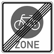 Ende einer Fahrradzone | |||||||||||||||||||||||||||
| 25 | Zeichen 245 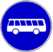 Bussonderfahrstreifen |
Ge- oder Verbot
| ||||||||||||||||||||||||||
| 25.1 | 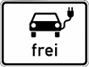 |
Ge- oder Verbot Mit diesem Zusatzzeichen sind elektrisch betriebene Fahrzeuge auf dem Bussonderfahrstreifen zugelassen. | ||||||||||||||||||||||||||
| A b s c h n i t t 6 V e r k e h r s v e r b o t e | ||||||||||||||||||||||||||||
| 26 |
Ge- oder Verbot Die nachfolgenden Zeichen 250 bis 261 (Verkehrsverbote) untersagen die Verkehrsteilnahme ganz oder teilweise mit dem angegebenen Inhalt. Erläuterung Für die Zeichen 250 bis 259 gilt:
| |||||||||||||||||||||||||||
| 27 | 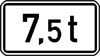 |
Ge- oder Verbot Ist auf einem Zusatzzeichen eine Masse, wie "7,5 t", angegeben, gilt das Verbot nur, soweit die zulässige Gesamtmasse dieser Verkehrsmittel einschließlich ihrer Anhänger die angegebene Grenze überschreitet. | ||||||||||||||||||||||||||
| 27.1 |
Ge- oder Verbot Mit diesem Zusatzzeichen sind elektrisch betriebene Fahrzeuge von Verkehrsverboten (Zeichen 250, 251, 253, 255, 260) ausgenommen. | |||||||||||||||||||||||||||
| 28 | Zeichen 250 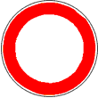 Verbot für Fahrzeuge aller Art |
Ge- oder Verbot
| ||||||||||||||||||||||||||
| 29 | Zeichen 251 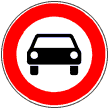 Verbot für Kraftwagen |
Ge- oder Verbot Verbot für Kraftwagen und sonstige mehrspurige Kraftfahrzeuge | ||||||||||||||||||||||||||
| 30 | Zeichen 253 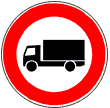 Verbot für Kraftfahrzeuge über 3,5 t |
Ge- oder Verbot Verbot für Kraftfahrzeuge mit einer zulässigen Gesamtmasse über 3,5 t, einschließlich ihrer Anhänger, und für Zugmaschinen. Ausgenommen sind Personenkraftwagen und Kraftomnibusse. Erläuterung | ||||||||||||||||||||||||||
| 30.1 | 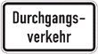 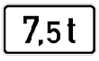 |
Ge- oder Verbot Wird Zeichen 253 mit diesen Zusatzzeichen angeordnet, bedeutet dies:
Erläuterung Diese Kombination ist nur mit Zeichen 253 zulässig. | ||||||||||||||||||||||||||
| 31 | Zeichen 254 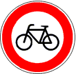 Verbot für Radverkehr | Ge- oder Verbot Verbot für den Radverkehr und den Verkehr mit Elektrokleinstfahrzeugen im Sinne der eKFV | ||||||||||||||||||||||||||
| 32 | Zeichen 255 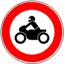 Verbot für Krafträder |
Ge- oder Verbot Verbot für Krafträder, auch mit Beiwagen, Kleinkrafträder und Mofas | ||||||||||||||||||||||||||
| 33 | Zeichen 259 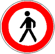 Verbot für Fußgänger |
Ge- oder Verbot Verbot für den Fußgängerverkehr | ||||||||||||||||||||||||||
| 34 | Zeichen 260 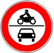 Verbot für Kraftfahrzeuge |
Ge- oder Verbot Verbot für Krafträder, auch mit Beiwagen, Kleinkrafträder und Mofas sowie für Kraftwagen und sonstige mehrspurige Kraftfahrzeuge | ||||||||||||||||||||||||||
| 35 | Zeichen 261 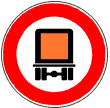 Verbot für kennzeichnungspflichtige Kraftfahrzeuge mit gefährlichen Gütern | Ge- oder Verbot Verbot für kennzeichnungspflichtige Kraftfahrzeuge mit gefährlichen Gütern | ||||||||||||||||||||||||||
| zu 36 bis 40 |
Ge- oder Verbot Die nachfolgenden Zeichen 262 bis 266 verbieten die Verkehrsteilnahme für Fahrzeuge, deren Maße oder Massen, einschließlich Ladung, eine auf dem jeweiligen Zeichen angegebene tatsächliche Grenze überschreiten. Erläuterung Die angegebenen Grenzen stellen nur Beispiele dar. | |||||||||||||||||||||||||||
| 36 | Zeichen 262 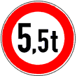 Tatsächliche Masse |
Ge- oder Verbot Die Beschränkung durch Zeichen 262 gilt bei Fahrzeugkombinationen für das einzelne Fahrzeug, bei Sattelkraftfahrzeugen gesondert für die Sattelzugmaschine einschließlich Sattellast und für die tatsächlich vorhandenen Achslasten des Sattelanhängers. Erläuterung | ||||||||||||||||||||||||||
| 37 | Zeichen 263 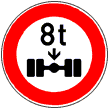 Tatsächliche Achslast | Erläuterung Das Zeichen kann in einer Überleitungstafel oder in einer Verschwenkungstafel oder in einer Fahrstreifentafel integriert sein. Dann bezieht sich das Verbot nur auf den jeweiligen Fahrstreifen, für den das Verbot angeordnet ist. | ||||||||||||||||||||||||||
| 38 | Zeichen 264 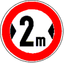 Tatsächliche Breite | Erläuterung Die tatsächliche Breite gibt das Maß einschließlich der Fahrzeugaußenspiegel an. Das Zeichen kann in einer Überleitungstafel oder in einer Verschwenkungstafel oder in einer Fahrstreifentafel integriert sein. Dann bezieht sich das Verbot nur auf den jeweiligen Fahrstreifen, für den das Verbot angeordnet ist. | ||||||||||||||||||||||||||
| 39 | Zeichen 265 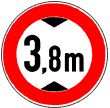 Tatsächliche Höhe | Erläuterung Das Zeichen kann in einer Überleitungstafel oder in einer Verschwenkungstafel oder in einer Fahrstreifentafel integriert sein. Dann bezieht sich das Verbot nur auf den jeweiligen Fahrstreifen, für den das Verbot angeordnet ist. | ||||||||||||||||||||||||||
| 40 | Zeichen 266 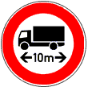 Tatsächliche Länge | Ge- oder Verbot Das Verbot gilt bei Fahrzeugkombinationen für die Gesamtlänge. | ||||||||||||||||||||||||||
| 41 | Zeichen 267 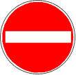 Verbot der Einfahrt |
Ge- oder Verbot Wer ein Fahrzeug führt, darf nicht in die Fahrbahn einfahren, für die das Zeichen angeordnet ist. Erläuterung Das Zeichen steht auf der rechten Seite der Fahrbahn, für die es gilt, oder auf beiden Seiten dieser Fahrbahn. | ||||||||||||||||||||||||||
| 41.1 |
Ge- oder Verbot Durch das Zusatzzeichen zu dem Zeichen 267 ist die Einfahrt für den Radverkehr und Elektrokleinstfahrzeuge im Sinne der eKFV zugelassen. | |||||||||||||||||||||||||||
| 42 | Zeichen 268 Schneeketten vorgeschrieben | Ge- oder Verbot Wer ein Fahrzeug führt, darf die Straße nur mit Schneeketten befahren. | ||||||||||||||||||||||||||
| 43 | Zeichen 269 Verbot für Fahrzeuge mit wassergefährdender Ladung |
Ge- oder Verbot Wer ein Fahrzeug führt, darf die Straße mit mehr als 20 l wassergefährdender Ladung nicht benutzen. | ||||||||||||||||||||||||||
| 44 | Zeichen 270.1 Beginn einer Verkehrsverbotszone zur Verminderung schädlicher Luftverunreinigungen in einer Zone |
Ge- oder Verbot
Erläuterung Die Umweltzone ist zur Vermeidung von schädlichen Umwelteinwirkungen durch Luftverunreinigungen in einem Luftreinhalteplan oder einem Plan für kurzfristig zu ergreifende Maßnahmen nach § 47 Absatz 1 oder 2 des Bundes-Immissionsschutzgesetzes festgesetzt und auf Grund des § 40 Absatz 1 des Bundes-Immissionsschutzgesetzes angeordnet. Die Kennzeichnung der Umweltzone erfolgt auf Grund von § 45 Absatz 1f. | ||||||||||||||||||||||||||
| 45 | Zeichen 270.2 Ende einer Verkehrsverbotszone zur Verminderung schädlicher Luftverunreinigungen in einer Zone | |||||||||||||||||||||||||||
| 46 | Freistellung vom Verkehrsverbot nach § 40 Absatz 1 des Bundes-Immissionsschutzgesetzes |
Ge- oder Verbot Das Zusatzzeichen zum Zeichen 270.1 nimmt Kraftfahrzeuge vom Verkehrsverbot aus, die mit einer auf dem Zusatzzeichen in der jeweiligen Farbe angezeigten Plakette nach § 3 der Verordnung zur Kennzeichnung der Kraftfahrzeuge mit geringem Beitrag zur Schadstoffbelastung ausgestattet sind. | ||||||||||||||||||||||||||
| 47 | Zeichen 272 Verbot des Wendens |
Ge- oder Verbot Wer ein Fahrzeug führt, darf hier nicht wenden. | ||||||||||||||||||||||||||
| 48 | Zeichen 273 Verbot des Unterschreitens des angebenen Mindestabstandes |
Ge- oder Verbot Wer ein Kraftfahrzeug mit einer zulässigen Gesamtmasse über 3,5 t oder eine Zugmaschine führt, darf den angegebenen Mindestabstand zu einem vorausfahrenden Kraftfahrzeug gleicher Art nicht unterschreiten. Personenkraftwagen und Kraftomnibusse sind ausgenommen. | ||||||||||||||||||||||||||
| A b s c h n i t t 7 G e s c h w i n d i g k e i t s b e s c h r ä n k u n g e n u n d Ü b e r h o l v e r b o t e | ||||||||||||||||||||||||||||
| 49 | Zeichen 274 Zulässige Höchstgeschwindigkeit |
Ge- oder Verbot
Erläuterung | ||||||||||||||||||||||||||
| 49.1 |
Ge- oder Verbot Das Zusatzzeichen zu dem Zeichen 274 verbietet Fahrzeugführenden, bei nasser Fahrbahn die angegebene Geschwindigkeit zu überschreiten. | |||||||||||||||||||||||||||
| 50 | Zeichen 274.1 Beginn einer Tempo 30-Zone |
Ge- oder Verbot Wer ein Fahrzeug führt, darf innerhalb dieser Zone nicht schneller als mit der angegebenen Höchstgeschwindigkeit fahren. Erläuterung Mit dem Zeichen können in verkehrsberuhigten Geschäftsbereichen auch Zonengeschwindigkeitsbeschränkungen von weniger als 30 km/h angeordnet sein. | ||||||||||||||||||||||||||
| 51 | Zeichen 274.2 Ende einer Tempo 30-Zone | |||||||||||||||||||||||||||
| 52 | Zeichen 275 Vorgeschriebene Mindestgeschwindigkeit |
Ge- oder Verbot Wer ein Fahrzeug führt, darf nicht langsamer als mit der angegebenen Mindestgeschwindigkeit fahren, sofern nicht Straßen-, Verkehrs-, Sicht- oder Wetterverhältnisse dazu verpflichten. Es verbietet, mit Fahrzeugen, die nicht so schnell fahren können oder dürfen, einen so gekennzeichneten Fahrstreifen zu benutzen. Erläuterung | ||||||||||||||||||||||||||
| zu 53, 54 und 54.4 |
Ge- oder Verbot Die nachfolgenden Zeichen 276 und 277 verbieten Kraftfahrzeugen das Überholen von mehrspurigen Kraftfahrzeugen und Krafträdern mit Beiwagen. Ist auf einem Zusatzzeichen eine Masse, wie "7,5 t" angegeben, gilt das Verbot nur, soweit die zulässige Gesamtmasse dieser Kraftfahrzeuge, einschließlich ihrer Anhänger, die angegebene Grenze überschreitet. Soll mehrspurigen Kraftfahrzeugen und Krafträdern mit Beiwagendas Überholen von einspurigen Fahrzeugen verboten werden, ist Zeichen 277.1 angeordnet. | |||||||||||||||||||||||||||
| 53 | Zeichen 276 Überholverbot für Kraftfahrzeuge aller Art | |||||||||||||||||||||||||||
| 54 | Zeichen 277 Überholverbot für Kraftfahrzeuge über 3,5 t |
Ge- oder Verbot Überholverbot für Kraftfahrzeuge mit einer zulässigen Gesamtmasse über 3,5 t, einschließlich ihrer Anhänger, und für Zugmaschinen. Ausgenommen sind Personenkraftwagen und Kraftomnibusse. | ||||||||||||||||||||||||||
| 54.1 |
Ge- oder Verbot Mit dem Zusatzzeichen gilt das durch Zeichen 277 angeordnete Überholverbot auch für Kraftfahrzeuge über 2,8 t, einschließlich ihrer Anhänger. | |||||||||||||||||||||||||||
| 54.2 |
Ge- oder Verbot Mit dem Zusatzzeichen gilt das durch Zeichen 277 angeordnete Überholverbot auch für Kraftomnibusse und Personenkraftwagen mit Anhänger. | |||||||||||||||||||||||||||
| 54.3 |
Ge- oder Verbot Das Zusatzzeichen zu dem Zeichen 274, 276, 277 oder 277.1 gibt die Länge einer Geschwindigkeitsbeschränkung oder eines Überholverbots an. | |||||||||||||||||||||||||||
| 54.4 | Zeichen 277.1 Verbot des Überholens von einspurigen Fahrzeugen für mehrspurige Kraftfahrzeuge und Krafträder mit Beiwagen |
Ge- oder Verbot Wer ein mehrspuriges Kraftfahrzeug führt, darf ein- und mehrspurige Fahrzeuge nicht überholen. | ||||||||||||||||||||||||||
| 55 |
Erläuterung Das Ende einer streckenbezogenen Geschwindigkeitsbeschränkung oder eines Überholverbots ist nicht gekennzeichnet, wenn das Verbot nur für eine kurze Strecke gilt und auf einem Zusatzzeichen die Länge des Verbots angegeben ist. Es ist auch nicht gekennzeichnet, wenn das Verbotszeichen zusammen mit einem Gefahrzeichen angebracht ist und sich aus der Örtlichkeit zweifelsfrei ergibt, von wo an die angezeigte Gefahr nicht mehr besteht. Sonst ist es gekennzeichnet durch die Zeichen 278 bis 282. | |||||||||||||||||||||||||||
| 56 | Zeichen 278 Ende der zulässigen Höchstgeschwindigkeit | Erläuterung Das Zeichen kann in einer Fahrstreifentafel oder einer Einengungstafel oder Aufweitungstafel integriert sein. Dann bezieht sich das Zeichen nur auf den jeweiligen Fahrstreifen, für den die zulässige Höchstgeschwindigkeit vorher angeordnet worden war. | ||||||||||||||||||||||||||
| 57 | Zeichen 279 Ende der vorgeschriebenen Mindestgeschwindigkeit | Erläuterung Das Zeichen kann in einer Fahrstreifentafel oder einer Einengungstafel integriert sein. Dann bezieht sich das Zeichen nur auf den jeweiligen Fahrstreifen, für den die vorgeschriebene Mindestgeschwindigkeit vorher angeordnet worden war. | ||||||||||||||||||||||||||
| 58 | Zeichen 280 Ende des Überholverbots für Kraftfahrzeuge aller Art | |||||||||||||||||||||||||||
| 59 | Zeichen 281 Ende des Überholverbots für Kraftfahrzeuge über 3,5 t | |||||||||||||||||||||||||||
| 59.1 | Zeichen 281.1 Ende des Verbots des Überholens von einspurigen Fahrzeugen für mehrspurige Kraftfahrzeuge und Krafträder mit Beiwagen | |||||||||||||||||||||||||||
| 60 | Zeichen 282 Ende sämtlicher streckenbezogener Geschwindigkeitsbeschränkungen und Überholverbote | Erläuterung Das Zeichen kann in einer Fahrstreifentafel oder einer Aufweitungstafel integriert sein. Dann bezieht sich das Zeichen nur auf den jeweiligen Fahrstreifen, für den die streckenbezogenen Geschwindigkeitsbeschränkungen und Überholverbote vorher angeordnet worden waren. | ||||||||||||||||||||||||||
| A b s c h n i t t 8 H a l t - u n d P a r k v e r b o t e | ||||||||||||||||||||||||||||
| 61 |
Ge- oder Verbot
Erläuterung Der Anfang der Verbotsstrecke kann durch einen zur Fahrbahn weisenden waagerechten weißen Pfeil im Zeichen, das Ende durch einen solchen von der Fahrbahn wegweisenden Pfeil gekennzeichnet sein. Bei in der Verbotsstrecke wiederholten Zeichen weist eine Pfeilspitze zur Fahrbahn, die zweite Pfeilspitze von ihr weg. | |||||||||||||||||||||||||||
| 62 | Zeichen 283 Absolutes Haltverbot |
Ge- oder Verbot Das Halten auf der Fahrbahn ist verboten. | ||||||||||||||||||||||||||
| 62.1 |
Ge- oder Verbot Das mit dem Zeichen 283 angeordnete Zusatzzeichen verbietet das Halten von Fahrzeugen auch auf dem Seitenstreifen. | |||||||||||||||||||||||||||
| 62.2 |
Ge- oder Verbot Das mit dem Zeichen 283 angeordnete Zusatzzeichen verbietet das Halten von Fahrzeugen nur auf dem Seitenstreifen. | |||||||||||||||||||||||||||
| 63 | Zeichen 286 Eingeschränktes Haltverbot |
Ge- oder Verbot
| ||||||||||||||||||||||||||
| 63.1 |
Ge- oder Verbot Mit dem Zusatzzeichen zu Zeichen 286 darf auch auf dem Seitenstreifen nicht länger als drei Minuten gehalten werden, ausgenommen zum Ein- oder Aussteigen oder zum Be- oder Entladen. | |||||||||||||||||||||||||||
| 63.2 |
Ge- oder Verbot Mit dem Zusatzzeichen zu Zeichen 286 darf nur auf dem Seitenstreifen nicht länger als drei Minuten gehalten werden, ausgenommen zum Ein- oder Aussteigen oder zum Be- oder Entladen. | |||||||||||||||||||||||||||
| 63.3 |
Ge- oder Verbot
| |||||||||||||||||||||||||||
| 63.4 |
Ge- oder Verbot
| |||||||||||||||||||||||||||
| 63.5 |
Ge- oder Verbot Durch das Zusatzzeichen zu Zeichen 286 wird das Parken für elektrisch betriebene Fahrzeuge innerhalb der gekennzeichneten Flächen erlaubt. | |||||||||||||||||||||||||||
| 63.6 |
Ge- oder Verbot Durch das Zusatzzeichen zu Zeichen 286 wird das Parken für Carsharingfahrzeuge (§ 39 Absatz 11) innerhalb der gekennzeichneten Flächen erlaubt. | |||||||||||||||||||||||||||
| 64 | Zeichen 290.1 Beginn eines eingeschränkten Haltverbots für eine Zone |
Ge- oder Verbot
| ||||||||||||||||||||||||||
| 64.1 |
Ge- oder Verbot Durch das Zusatzzeichen zu Zeichen 290.1 wird das Parken für elektrisch betriebene Fahrzeuge innerhalb der gekennzeichneten Flächen erlaubt. | |||||||||||||||||||||||||||
| 64.2 |
Ge- oder Verbot Durch das Zusatzzeichen zu Zeichen 290.1 wird das Parken für Carsharingfahrzeuge (§ 39 Absatz 11) innerhalb der gekennzeichneten Flächen erlaubt. | |||||||||||||||||||||||||||
| 65 | Zeichen 290.2 Ende eines eingeschränkten Haltverbots für eine Zone | |||||||||||||||||||||||||||
| A b s c h n i t t 9 M a r k i e r u n g e n | ||||||||||||||||||||||||||||
| 66 | Zeichen 293 Fußgängerüberweg |
Ge- oder Verbot Wer ein Fahrzeug führt, darf auf Fußgängerüberwegen sowie bis zu 5 m davor nicht halten. | ||||||||||||||||||||||||||
| 67 | Zeichen 294 Haltlinie |
Ge- oder Verbot Ergänzend zu Halt- oder Wartegeboten, die durch Zeichen 206,
durch Polizeibeamte, Lichtzeichen oder Schranken gegeben
werden, ordnet sie an: | ||||||||||||||||||||||||||
| 68 | Zeichen 295 Fahrstreifenbegrenzung Begrenzung von Fahrbahnen und Sonderwegen |
Ge- oder Verbot
Erläuterung
| ||||||||||||||||||||||||||
| 69 | Zeichen 296 Fahrstreifen B Fahrstreifen A Einseitige Fahrstreifenbegrenzung |
Ge- oder Verbot
| ||||||||||||||||||||||||||
| 70 | Zeichen 297 Pfeilmarkierungen |
Ge- oder Verbot
Erläuterung Pfeile empfehlen, sich rechtzeitig einzuordnen und in Fahrstreifen nebeneinander zu fahren. Fahrzeuge, die sich eingeordnet haben, dürfen auch rechts überholt werden. | ||||||||||||||||||||||||||
| 71 | Zeichen 297.1 Vorankündigungspfeil |
Erläuterung Mit dem Vorankündigungspfeil wird eine Fahrstreifenbegrenzung angekündigt oder das Ende eines Fahrstreifens angezeigt. Die Ausführung des Pfeils kann von der gezeigten abweichen. | ||||||||||||||||||||||||||
| 72 | Zeichen 298 Sperrfläche |
Ge- oder Verbot Wer ein Fahrzeug führt, darf Sperrflächen nicht benutzen. | ||||||||||||||||||||||||||
| 73 | Zeichen 299 Grenzmarkierung für Halt- oder Parkverbote |
Ge- oder Verbot Wer ein Fahrzeug führt, darf innerhalb einer Grenzmarkierung für Halt- oder Parkverbote nicht halten oder parken. Erläuterung Grenzmarkierungen bezeichnen, verlängern oder verkürzen ein an anderer Stelle vorgeschriebenes Halt- oder Parkverbot. | ||||||||||||||||||||||||||
| 74 | Parkflächenmarkierung |
Ge- oder Verbot Eine Parkflächenmarkierung erlaubt das Parken; auf Gehwegen aber nur Fahrzeugen mit einer zulässigen Gesamtmasse bis zu 2,8 t. Die durch die Parkflächenmarkierung angeordnete Aufstellung ist einzuhalten. Wo sie mit durchgehenden Linien markiert ist, darf diese überfahren werden. Erläuterung Sind Parkflächen auf Straßen erkennbar abgegrenzt, wird damit angeordnet, wie Fahrzeuge aufzustellen sind. | ||||||||||||||||||||||||||